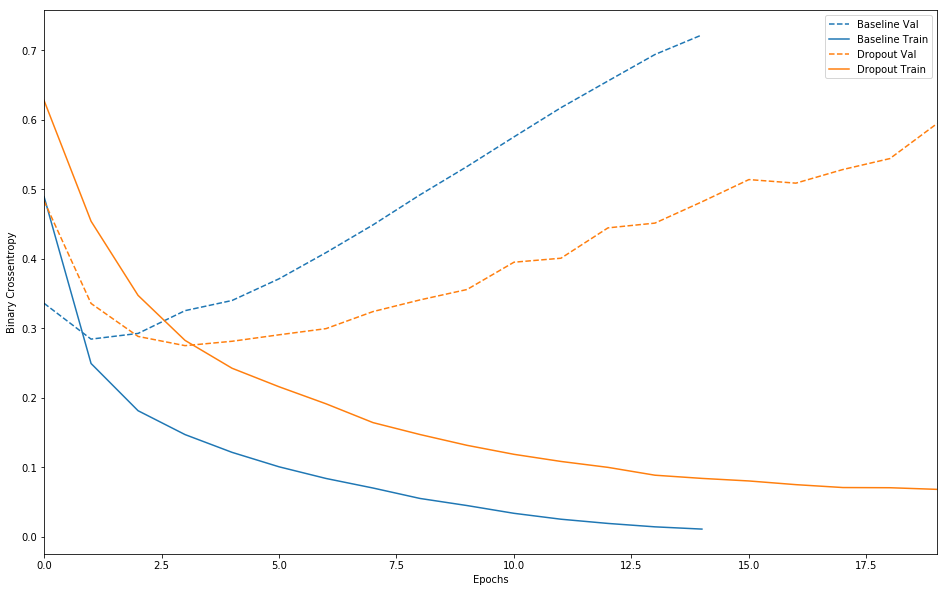
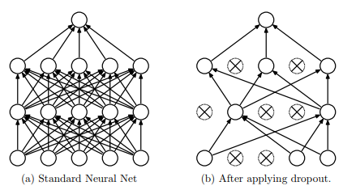
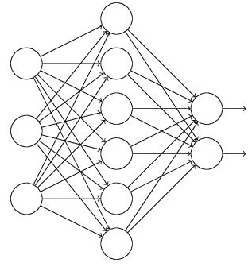
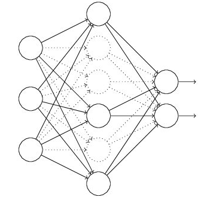
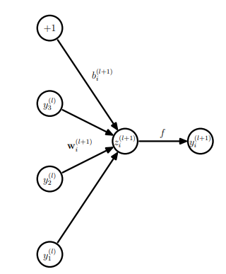
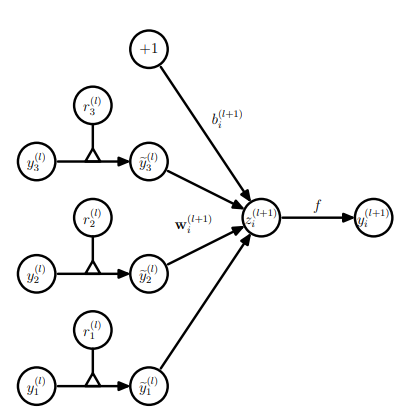

Dropout简介
Dropout 解决过拟合
先介绍dropout是干什么的。
在机器学习的模型中，如果模型的参数太多，而训练样本又太少，训练出来的模型很容易产生过拟合的现象。在训练神经网络的时候经常会遇到过拟合的问题，过拟合具表现在：模型在训练数据上损失函数值较小，预测准确率较高；但是在验证数据集上损失函数值比较大，预测准确率较低。如下图中 baseline的交叉熵损失函数在训练集和验证集上的曲线所示：随着训练迭代次数的增加，训练集和验证集的gap越来越大。

Dropout可以比较有效的缓解过拟合的发生，在一定程度上达到正则化的效果。
1.2 Dropout 相关的几篇论文
在2012年，Hinton在其论文《Improving neural networks by preventing co-adaptation of feature detectors》中提出Dropout。当一个复杂的前馈神经网络被训练在小的数据集时，容易造成过拟合。为了防止过拟合，可以通过阻止特征检测器(神经网络中的节点)的共同作用来提高神经网络的性能。
在2012年，Alex、Hinton在其论文《ImageNet Classification with Deep Convolutional Neural Networks》中用到了Dropout算法，用于防止过拟合。并且，这篇论文提到的AlexNet网络模型引爆了神经网络应用热潮，并赢得了2012年图像识别大赛冠军，使得CNN成为图像分类上的核心算法模型。
随后，又有一些关于Dropout的文章《Dropout:A Simple Way to Prevent Neural Networks from Overfitting》、《Improving Neural Networks with Dropout》、《Dropout as data augmentation》。
Dropout可以作为训练深度神经网络的一种trick供选择。在每个训练批次中，通过忽略一半的特征检测器（让一半的隐层节点值为0），可以明显地减少过拟合现象。这种方式可以减少特征检测器（隐层节点）间的相互作用，检测器相互作用是指某些检测器依赖其他检测器才能发挥作用。
Dropout说的简单一点就是：我们在前向传播的时候，让某个神经元的激活值以一定的概率p停止工作，这样可以使模型泛化性更强，因为它不会太依赖某些局部的特征，如下图所示：

神经网络中dropout的工作原理
假设我们要训练这样一个神经网络，如图所示。

输入是x输出是y，正常的流程是：我们首先把x通过网络前向传播，然后把误差反向传播以决定如何更新参数让网络进行学习。使用Dropout之后，过程变成如下：
（1）首先随机（临时）删掉网络中一半的隐藏神经元，输入输出神经元保持不变（图3中虚线为部分临时被删除的神经元）

（2） 然后把输入x通过修改后的网络前向传播，然后把得到的损失通过修改的网络反向传播，在没有被删除的神经元上按照随机梯度下降法更新对应的参数（w，b）。
（3）继续重复 1、 2 两步：最终训练处一个完整的神经网络。
后续则可以使用这个NN模型用于预测了。
Dropout 更深入探讨
上文简单描述了 Dropout 的工作原理，下面我们深入到代码和数学原理层面了解一下。
对于一个神经网络，变量定义如下：
- $L$： hidden layer的数量， $l \in \{1, \dots, L\}$；
- $z^{(l)}$: 第 $l$ 层的激活因子；
- $y^{(l)}$: 第 $l$ 层的输出向量，也是第 $l+1$ 等的输入向量。
- $W^{(l)}$ 和 $b^{(l)}$: 第 $l$ 层的 weights 和 biases
在标准的神经网络的前向过程中， 第 $l$ 和 $l+1$层可以用下图和公式所示：

$$
\begin {align}
z_i^{(l+1)} &= w_i^{(l+1)} y^{(l)} + b_i^{(l+1)} \\
y_i^{(l+1)} &= f(z_i^{(l+1)})
\end {align}
$$
其中 $f$ 为神经网络的激活函数。
当使用dropout以后 前向传播可以用下图和公式表示：

$$
\begin {align}
r_j^{(l)} &= \mathrm{Bernoulli}(p) \\
\tilde{y}^{(l)} &= r_j^{(l)} \times y^{(l)} \\
z_i^{(l+1)} &= w_i^{(l+1)} \tilde{y}^{(l)} + b_i^{(l+1)} \\
y_i^{(l+1)} &= f(z_i^{(l+1)})
\end {align}
$$
其中 $r^{(l)}$ 是一个向量，大小与其对应的隐藏层的节点数相同，其每个值相互独立，并且有概率 $p$ 的可能性是1，$1-p$ 的概率是0。 即上述公式中 Bernoulli 分布的含义。
代码层面实现让某个神经元以概率$p$停止工作(输出值为0)，其实就是让它的激活函数值以概率$p$变为0。比如我们某一层网络神经元的个数为1000个，其激活函数输出值为$y_1, y_2, y_3, \dots , y_{1000}$，我们dropout rate选择0.4，那么这一层神经元经过dropout后，1000个神经元中会有大约400个的值被置为0。
下面我们从代码层面上看看dropout的实现：
在 CS231n Convolutional Neural Networks for Visual Recognition 中提供展示了两种 dropout的实现逻辑：
1 | p = 0.5 # probability of keeping a unit active. higher = less dropout |
可以看到在模型训练的 forward 环节 是严格按照上面的介绍的dropout的公式进行处理的。但是 模型的predict环节需要在每一个使用dropout的地方 乘以 概率 $p$ 来对该层的输出进行缩放。缩放的原因很简单：在训练的时候每个节点是用其上一层网络节点总数 乘以 $p$ 个节点计算得到的， 但是在predict环节却是使用了所有的上一层节点得到的，为了保持训练和预测一致，所以需要对其进行缩放。
但是在预测环节乘以概率$p$ 不符合我们代码开发的逻辑， 总不能对所有现有模型单独开发一个 dropout版本的 predict函数。最好是所有的predict 函数都保持不变就可以实现 scale功能。其实是可以做到的。我们只需要在模型的训练阶段 对每一层dropout的输出进行缩放就可以了，逻辑代码如下：
1 | p = 0.6 # probability of keeping a unit active. higher = less dropout |
可以看到 U1，U2计算的使用都 除以 p 即达到了缩放的功能， 在预测环境不需要做任何改动。
在 keras代码中以 theano 为 backend时 dropout的实现如下，可以看到倒数第二行 x /= retain_prob 即是我们所说的在训练环境对使用dropout 的输出节点进行 缩放(scale)。 tensorflow的dropout代码跳转比较负责，需要的可以自行查找。
1 | def dropout(x, level, noise_shape=None, seed=None): |
当前Dropout被大量利用于全连接网络，而且一般认为设置为0.5或者0.3，而在卷积网络隐藏层中由于卷积自身的稀疏化以及稀疏化的ReLu函数的大量使用等原因，Dropout策略在卷积网络隐藏层中使用较少。总体而言，Dropout是一个超参，需要根据具体的网络、具体的应用领域进行尝试。
参考资料
深度学习中Dropout原理解析 (该blog为本文的主要参考，部分内容完全摘抄，基于扩展阅读后产生了本文)
Srivastava, Nitish, et al. “Dropout: a simple way to prevent neural networks from overfitting.” The Journal of Machine Learning Research 15.1 (2014): 1929-1958.